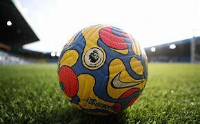

The Premier League is the highest level of the English football league system. Contested by 20 clubs,
it operates on a system of promotion and relegation with the English Football League (EFL). Seasons usually run
from August to May, with each team playing 38 matches: two against each other, one home and one away.
Most games are played on Saturday and Sunday afternoons, with occasional weekday evening fixtures.
The competition was founded as the FA Premier League on 20 February 1992, following the decision of
First Division (the top-tier league from 1888 until 1992) clubs to break away from the English Football League.
However, teams may still be relegated to and promoted from the EFL Championship. The Premier League takes
advantage of a £5 billion television rights deal, with Sky and BT Group securing the domestic rights to
broadcast 128 and 32 games, respectively. This deal will rise to £6.7 billion for the four seasons
from The league is projected to earn $7.2 billion in overseas TV right.
The Premier League is a corporation managed by a chief executive, with member clubs acting as
shareholders. Clubs were apportioned central payment revenues of £2.4 billion in 2016–17,
with a further £343 million in solidarity payments to EFL clubs.
